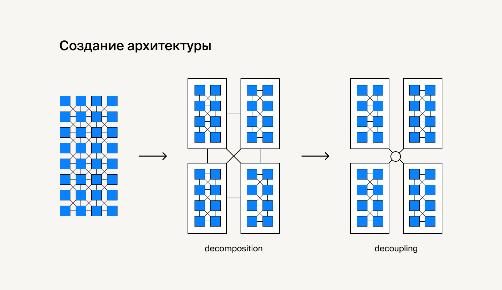

Архитектура +++
Архитектура
Строительство дома начинается с плана. Можно, конечно, сразу перейти к делу и начать заливать фундамент (а дальше как пойдёт), но насколько такая конструкция будет надёжной — большой вопрос. Да и в процессе может оказаться, что стены не там, пол кривой, а окон не хватает. Аналогично с разработкой приложения. Хороший проект, который будет «жить» долго, начинается с архитектуры.
Начнём с обозначения — что такое архитектура с точки зрения различных определений.
Если рассматривать приложение как систему, то есть набор элементов или компонентов, объединённых для выполнения конкретной функции, можно выделить следующие определения:
Архитектура идентифицирует главные элементы (компоненты) системы и способы их взаимодействия.
Архитектура — это организация системы, воплощённая в её компонентах, их отношениях между собой и с внешним окружением.
Архитектурными можно назвать такие решения, которые распределены по всему приложению, а стоимость их изменения будет огромной. Критерии качественной и хорошей архитектуры системы (или дизайна системы):
- эффективность,
- масштабируемость процесса разработки,
- гибкость и возможность расширения,
- тестируемость и другие способы обеспечения качества системы,
- возможность повторно использовать элементы.
Критерии хорошего дизайна упрощают разработку, но иногда для принятия решений важнее понимать, как лучше не делать. Архитектуру с такими качествами точно делать не стоит:
- дизайн системы сложно изменить, так как это влечёт за собой большое количество изменений в других её частях,
- после внесения изменений ломаются другие части приложения,
- сложно или невозможно повторно использовать элемент системы в другом приложении (например, из-за сложности «выпутывания» из текущего приложения).
Методологии
Паттерн — это типовое решение типовой проблемы.
Паттерны (или методологии) — это совсем не страшно и необходимо для понимания.
Основные свойства:
- Можно легко использовать повторно;
- Формируют структуру приложения.
Паттерны пришли в программирование из архитектуры. В конце прошлого тысячелетия, примерно в 1994 году, — вышла книга от «банды четырёх» (или Gang of four), в которой были описаны все паттерны применительно к программному обеспечению.
На Хабре есть полезная шпаргалка по материалам книги.
Если вы уже слышали, что такое паттерны, но все ещё не применяете их, советуем посмотреть доклад Антона Немцева про «Паттерны JavaScript». Доклад будет не менее интересен тем, кто впервые столкнулся с паттернами в этом уроке.
Зачем использовать паттерны?
Паттерны — это не просто бюрократические советы, как надо делать. Под паттернами можно понимать проверенные опытом и множеством проектов советы по написанию стабильной архитектуры.
Они помогают не ходить по всем «граблям», а по возможности обходить их. Когда люди начинают избегать «граблей» и писать собственные решения, с большой вероятностью всё равно получится подобие уже существующего паттерна.
Вы можете использовать тот или иной паттерн ежедневно, но даже не знать об этом. Паттерны часто сравнивают с алгоритмами, ведь оба понятия описывают типовые решения каких-то известных проблем.
Но если алгоритм — это какой-то чёткий набор действий, то паттерн — это высокоуровневое описание решения, конкретная реализация которого может отличаться в двух разных случаях.
Паттерны принято делить на 3 группы:
- Порождающие паттерны — служат для гибкого создания объектов без внесения в код лишних зависимостей.
- Структурные паттерны — описывают различные способы конструирования связей между объектами.
- Поведенческие паттерны — служат для эффективной коммуникации между объектами.
Примеры паттернов
Один из самых простых паттернов — Синглтон. Суть его заключается в том, что у конкретного класса будет всегда один экземпляр.
class Singleton {
private static instance: Singleton;
private constructor() { }
public static getInstance(): Singleton {
if (!Singleton.instance) {
Singleton.instance = new Singleton();
}
return Singleton.instance;
}
public someBusinessLogic() {
// ...
}
}
const s1 = Singleton.getInstance();
const s2 = Singleton.getInstance();
s1 === s2 // true
В данном примере при первом вызове getInstance создаётся объект класса Singleton. В ответ на второй вызов getInstance отдаёт созданный ранее экземпляр класса.
Еще один пример — Итератор. Итератор предоставляет интерфейс для последовательного обхода любой коллекции данных.
class Iterator {
private readonly data: number[];
private position: number = 0;
constructor(data: number[]) {
this.data = data;
}
public next() {
return this.data[this.position++];
}
}
const i = new Iterator([1,2,3]);
console.log(i.next()); // 1
console.log(i.next()); // 2
console.log(i.next()); // 3
console.log(i.next()); // undefined
Что-то напоминает? Конечно! Генераторы в JS используют паттерн Итератор — и не только они. Вы будете с ним часто встречаться.
Больше примеров паттернов вы встретите дальше в уроках. Также будет полезным сайт “Refactoring Guru”, где можно найти информацию о разных паттернах и примеры их реализации на разных языка
Основные принципы проектирования
- DRY — don't repeat yourself («не повторяйте себя»),
- KISS — keep it simple stupid («делайте вещи проще»),
- SOLID — пять основных принципов объектно-ориентированного программирования и проектирования,
- YAGNI — you ain't gonna need it («вам это не понадобится»),
- GRASP — документированные и стандартизированные принципы объектно-ориентированного анализа,
- Package Principles — package cohesion (REP, CRP, CCP) и package coupling (ADP, SDP, SAP).
Декомпозиция
Декомпозицию можно рассматривать как основу модульной архитектуры.
Все проекты должны быть максимально декомпозированы, что даст возможность:
- Легко изменять отдельные части системы.
- Контролировать взаимосвязи в системе. Если у системы всё со всем связано — такое отслеживать почти невозможно или крайне проблематично.
Рассмотрим принципы правильной декомпозиции.
Иерархичность
Программная система должна быть разбита на небольшие «атомарные» подсистемы. Каждая из них решает чётко поставленную перед ней подзадачу. Сами подсистемы разбивают на компоненты, которые при взаимодействии решают поставленную задачу. Компонентом может быть класс, модуль или функция.
Функциональность
Главный инструмент при реализации функциональности — паттерн «Модуль». Он уже был рассмотрен в теме про модули. Кратко повторим: модуль — это функция и данные, необходимые для её выполнения. Модуль атомарен. Некоторые его свойства:
- Инкапсуляция данных;
- Управление зависимостями (создание структуры подключаемых данных);
- Не засоряет глобальный контекст приложения.
С точки зрения JavaScript небольшой пример, который резюмирует поведение паттерна «Модуль»:
Резюме для реализации композиции в ваших проектах:
- Минимизировать использование глобальных зависимостей.
- Не использовать неявные зависимости — все зависимости модуля должны быть явно прописаны.
- Минимизировать связи между модулями. В помощь — «Наблюдатель», «Медиатор».
Что ещё можно посмотреть:
- Event driven development;
- Inversion of Control и Dependency Injection.
MVC
Классический и простой способ построения структуры приложения — шаблон MVC (Модель-Вид-Контроллер или Модель-Состояние-Поведение). Основная цель данного шаблона — отделение бизнес-логики от пользовательского интерфейса. По итогу приложение становится легче масштабировать, проще тестировать, поддерживать, сопровождать и реализовывать. Что нам гарантируют модели в MVC:
- Не управляют отображением данных. То есть не генерируют никакой HTML-разметки;
- Не взаимодействуют напрямую с пользователем;
- Содержат именно бизнес-логику приложения: методы для получения и обработки данных;
- Могут хранить в себе данные, и они могут взаимодействовать с другими моделями.
Представительский уровень в MVC (он же view, вью):
- Несут ответственность за отображение данных. Содержат в себе вызовы шаблонизаторов, создание блоков, компонент и подобных вещей;
- Получают данные напрямую от моделей или контроллеров;
- Являются посредниками между пользователем и контроллером;
- Взаимодействуют с моделями посредством контроллеров.
Контроллеры в MVС:
- Ответственны за взаимодействие между представительским уровнем, моделями, а также взаимодействие между «вьюшками»;
- Являются связующим звеном приложения;
- Содержат минимум бизнес-логики и должны быть максимально простыми в конфигурации. Данное свойство позволяет удобно вносить изменения и расширять приложения;
- Логика контроллера по большей части типична и выносится в базовые классы.
Контроллер отличается от моделей тем, что у последних логика, как правило, специфична для конкретного приложения. Соберём всё вместе и сделаем шаг в сторону реализации MVC-приложения.
- Шаг 1. Создаём базовый класс (он же View в MVC);
- Шаг 2. Наследуем от него страницы — Chats и т. д.;
- Шаг 3. Внутри описываем отображение определённой части приложения;
- Шаг 4. Содержимое генерируем с помощью шаблонизатора;
- Шаг 5. Создаём сервисы и модули для управления бизнес-логикой работы с данными (а-ля модели);
- Шаг 6. Настраиваем взаимодействие сервисов и вьюшек через контроллеры. Например, через паттерн «Медиатор».
На основе таких компонентов можно, используя композицию, создавать отдельные блоки (в нашем случае это могут быть страницы) и другие компоненты. Компоненты могут состоять из других компонентов, потому что композиция легко применима к такому процессу как «лего-сборка» вьюшек. В каждый момент активен только один блок. Во время работы приложения — управление передаётся между различными блоками. Необходимо максимально отделить модели (сервисы) от представительского уровня. Их связность должна быть нулевой. Всё делается через контроллеры. Здесь поможет декомпозиция.
React (docs)
Библиотека использующая:
- Virtual DOM, DOM который монтируется через JS
- Жизненный цикл компонентов
- SPA. Смена роутов без перезагрузки страницы
- Модульность. Во внутрь компонента можно импортировать все что угодно
- ES6, jsx-шаблонизацию и синтаксический сахар
Config files
.env
.eslintignore
.eslintrc.json
.gitignore
.prettierignore
.prettierrc
next.config.js
package.json
README.md
tsconfig.json
Директории
.vscode/
api/
components/
icons/
layout/
pages/
page1/
page2/
...
pageN/
ui/
constants/
mock/
pages/
page1/
page2/
...
pageN/
public/
fonts/
images/
favicon.ico
styles/
types/
utils/
build/ (или dist/)
Папка static
В static складывается весь статичный контент, который не требует постобработки бандлером, а только копируется в корневой уровень build. В основном это:
- иконки разного размера для браузеров,
- картинки, которые не импортируются в модулях и не требуют обработки,
- шрифты,
- HTML-файлы,
- файлы для поисковых роботов.
Папка build
Бандлер обрабатывает файлы из srс/ и помещает их в папку build/, затем копирует файлы из static/ в корневой уровень build/.
Файлы стилей рекомендуется импортировать из JavaScript, всё остальное стоит складывать в static. В библиотеках такая папка чаще всего называется dist (сокращённо от distributable — «подлежащий распределению»).
Папка src
Есть несколько популярных принципов хранения файлов. Одни из них основаны на группировке файлов по «фичам», другие на группировке по типам файлов, а некоторые даже имеют спецификацию. Один из таких принципов — атомарный дизайн. Не стоит много времени уделять выбору системы, можно менять её по мере роста проекта.
Дерево проекта может выглядеть так:
src/
├── components/
│ └── button/
│ ├── button.*css
│ ├── button.js
│ ├── button.tmpl.js
│ └── index.js
├── layout/
│ └── main/
│ ├── main.*css
│ ├── main.js
│ ├── main.tmpl.js
│ └── index.js
├── modules/
│ └── chats/
│ ├── utils
│ │ └── getFullname.js
│ │ └── getIsOnline.js
│ ├── components/
│ │ └── message/
│ │ ├── message.*css
│ │ ├── message.js
│ │ ├── message.tmpl.js
│ │ └── index.js
│ ├── chats.*css
│ ├── chats.js
│ ├── chats.tmpl.js
│ └── index.js
├── pages/
│ ├── home/
│ │ ├── modules/
│ │ │ ├── login/
│ │ │ │ ├── login.*css
│ │ │ │ ├── login.js
│ │ │ │ ├── login.tmpl.js
│ │ │ │ └── index.js
│ │ │ └── logout/
│ │ │ ├── logout.*css
│ │ │ ├── logout.js
│ │ │ ├── logout.tmpl.js
│ │ │ └── index.js
│ │ ├── home.*css
│ │ ├── home.js
│ │ ├── home.tmpl.js
│ │ └── index.js
│ └── about/
│ ├── about.*css
│ ├── about.js
│ ├── about.tmpl.js
│ └── index.js
└── utils/
├── get.js
├── http.js
├── isEmpty.js
└── templator.js
Папка src/components
Компоненты, которые будут использованы в двух и более модулях стоит держать в папке components/. Эти компоненты не должны зависеть от внешнего состояния или иметь сторонние эффекты. Если компонент будет использован только в одном модуле, стоит поместить его в локальную папку ./components для индикации явной зависимости. Такой подход позволяет не засорять общую папку components и упрощает переход к дизайн-системе, если в ней возникла необходимость. Если провести аналогию с системой атомарного хранения, то компоненты — это атомы и молекулы, так как часто в компонентах будут и группы компонентов (например, field, который может содержать в себе input и label).
Папка src/pages
Если в проекте есть роутинг, то удобно держать страницы в папке pages/. Обычно страницы отображают контент, собранный из импортированных модулей и компонентов. В рамках аналогии с атомарным дизайном это страницы.
Папка src/utils
Многие приложения имеют утилитарные функции, которые могут использоваться как в одном, так и в нескольких местах. Чтобы определить подходящее место в проекте для утилитарной функции, стоит ответить на два вопроса:
- Функция может использоваться в одном файле или в его зависимых файлах? Тогда её лучше определить в локальной папке. Если таких функций несколько, можно поместить их в папку utils около файла.
- Функция может использоваться в нескольких модулях или компонентах внутри общих папок? Тогда её лучше поместить в общую папку utils.
Опционально
В больших проектах часто не хватает основной структуры, поэтому для удобства иногда используют дополнительные папки для семантического разделения по функциональности.
В некоторых проектах можно встретить папку src/modules. В ней собираются модули (иногда их называют контейнерами), которые являются связующим звеном между состоянием приложения и компонентами для его отображения. Иногда они содержат функционал, бизнес-логику, которая используется в нескольких местах приложения. Если модуль используется только на одной странице, лучше помещать его в локальную папку страницы, чтобы не засорять общую папку модулей. В атомарном дизайне модули можно считать организмами.
Страницы могут иметь несколько видов отображения (например, с хедером или без). Эти макеты можно держать в папке src/layout. Макеты содержат общие для определённого вида страниц стили и внутри себя отображают контент из pages. В системе атомарного дизайна это темплейты. Часто встречаются в проектах, использующих Gatsby.
Общие рекомендации
Старайтесь максимально декомпозировать компоненты. Если есть стили — выносите в отдельный файл рядом с самим компонентом. Незачем хранить все CSS-файлы в отдельной папке — так только сложнее найти описание стиля.
index.js каждого блока и компонента позволяют экспортировать только нужное. Например, вот так:
export { default } from './button';
export { template as buttonTemplate } from './button.tmpl';
...
У компонента должна быть единая точка входа. В index.js можно делать все необходимые экспорты, но в рамках текущей папки и вложенных в неё (если такие есть).
Старайтесь не мусорить в файлах компонентов и блоков. Например, для констант создайте файл const.js и перенесите их туда. Если же константа используется между разными компонентами, модулями или блоками — сделайте её общей.
Readme
Даже законченный проект остаётся только заготовкой, пока им не начнут пользоваться. Но сначала пользователь должен понять, зачем ему пользоваться вашим кодом. В этом помогает файл README.
README — первое, что прочитает пользователь, когда попадёт в репозиторий на «Гитхабе». Хороший REAMDE отвечает на четыре вопроса:
- Готов ли проект к использованию?
- В чём его польза?
- Как установить?
- Как применять?
Бейджи
Быстро понять статус проекта помогают бейджи на «Гитхабе». Иногда разработчики ограничиваются парой бейджев, которые сообщат о статусе тестов кода:

Если пользователь увидит ошибку в работе тестов, то поймёт: использовать текущую версию в важном проекте — не лучшая идея.
Бейджи помогают похвастаться достижениями: насколько популярен проект, как много разработчиков создавало этот код. Через бейджи можно даже пригласить пользователя в чат:

В README Webpack строка бейджев подробно рассказывает о покрытии кода тестами. Когда проект протестирован, это вызывает доверие пользователя. Последний бейдж приглашает присоединиться к разработке.
Другая строка убедит пользователя в стабильности инфраструктуры и популярности проекта. Последний бейдж зовёт в чат проекта.
Описание
Краткое опишите, какую задачу решает проект. Пользователь не верит обещаниям и не готов читать «полотна» текста. Поэтому в описании достаточно нескольких строк:

Авторы React дробят описание на абзацы и списки — так проще пробежаться глазами по тексту и найти ключевую информацию.
Если у проекта есть сайт, добавьте ссылку в заголовок.
Установка
Лучше всего пользователя убеждает собственный опыт. Чем быстрее он начнёт пользоваться проектом, тем раньше почувствует пользу. Для этого помогите ему установить приложение: напишите краткую пошаговую инструкцию.
Если проект предназначен для разработчиков, добавьте информацию об установке тестовых версий. Например:
npm install— установка стабильной версии,npm start— запуск версии для разработчика,npm run build:prod— сборка стабильной версии.
Примеры использования
Хорошо, если сразу после установки пользователь сможет решить свои задачи без изучения проекта. Это особенно верно, если ваш пользователь — не профессиональный разработчик. Но даже профессионал поймёт вас лучше, если показать примеры использования:

Для более подробных инструкции добавьте новые разделы или ссылки:
- на документацию,
- вики проекта,
- описание API.
В учебном проекте будут полезен раздел с описанием стиля кода и правилами разработки: как работать с ветками, пул-реквестами и релизами.
Команда
Если вы работаете в команде, укажите основных участников: им будет приятно, а новые разработчики охотнее присоединятся к проекту. «Гитхаб» — не просто инструмент, это социальная сеть разработчиков.

Примеры README
- «Реакт»,
- «Эхо»,
- «Вебпак»,
- «ТДенгине»,
- «Соул-хантинг».